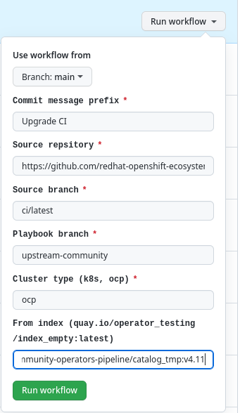
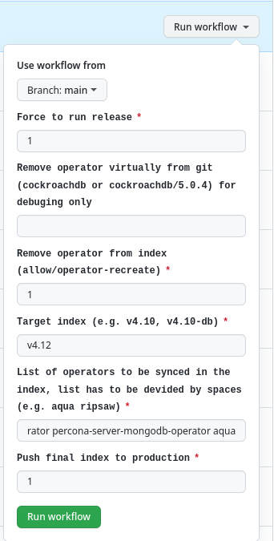

OCP
The following part is related to Openshift only.
TODO
- prow setup
- Init prow
- add robot to repo
- PR to openshift repository
- script and script dev
- playbook
- playbook dev and dev image
- Temporary index action to check
Prow
The prow job is automatically triggered for every OCP PR if GH Action did not fail at the beginning. See the structure below.
graph TD
openshift-deploy.sh --> openshift-deploy-core.sh --> deploy_olm_operator_openshift_upstream
openshift-deploy-core.sh --> prepare_test_index
prepare_test_index -.-> quay
quay -.-> deploy_olm_operator_openshift_upstream
style quay stroke-dasharray: 5 5
subgraph prow
openshift-deploy.sh & openshift-deploy-core.sh
subgraph Ansible
deploy_olm_operator_openshift_upstream
end
end
subgraph GH Action
prepare_test_index & quay
end
Openshift robot triggers cluster setup for every supported OCP version. When the cluster is ready, openshift-deploy.sh is executed. The script calls another script openshift-deploy-core.sh which triggers GH Action prepare_test_index. During the action run, it pushes the index and a bundle to Quay tagged by a commit hash. Once images are pushed, the playbook role deploy_olm_operator_openshift_upstream is triggered which pulls the images and installs the operator.
Where to edit the main openshift script
To edit openshift-deploy.sh located in ci/prow of the project, first edit openshift-deploy.sh located in CI repository. Then upgrade the project running Upgrade CI. The same applies for openshift-deploy-core.sh.
Consider using ci/dev instead of ci/latest during development as described here.
Where to edit deploy_olm_operator_openshift_upstream role
Like every Ansible role, editing is possible in upstream directory of ansible playbook repository. When using the production branch upstream-community, automatic playbook image build is triggered. When using the development branch upstream-community-dev, please trigger playbook image build manually as described here.
Consider using upstream-community-dev instead of upstream-community during development as described here.
Where to edit or restart prepare_test_index action
To restart prepare_test_index action, go to GH Actions of the project.
When an edit is needed, go to templates.
Consider using ci/dev instead of ci/latest during development as described here.
How to edit prow building block configuration
Prow is configured at openshift repository. Open a PR and get LGTM approval from your colleague to get an automatic merge.
In case you are creating a new project, make sure openshift-ci-robot is added as a collaborator to the project with Admin rights.
New Openshift index release
Prerequisities
https://github.com/redhat-openshift-ecosystem/operator-test-playbooks/blob/upstream-community/upstream/roles/bundle_validation_filter/defaults/main.yml
Testing breaking APIs
If there is a breaking API in a new index, please edit bundle_validation_filter role details.
Add new index support
Always check and add the current index version to
- operator_info role defaults
- OCP2K8S and KIND_SUPPORT_TABLE variable in ci/dev and ci/latest consequently
Enable pyxis support
To enable pyxis support, clone the issue.
Maximum
Edit oc_version_max in playbook defaults only if 4.x is available at https://mirror.openshift.com/pub/openshift-v4/clients/ocp/latest-4.x/openshift-client-linux.tar.gz
Also consider changing current_openshift_run when deleting a prow job.
K8S alignment
Despite this documentation being focused on OCP, alignment with k8s is needed.
Edit k8s-operatorhub ci/config latest ocp as kind_kube_version and upgrade by action.
You may need to edit also kind_version and the following file according to https://github.com/kubernetes-sigs/kind/releases
Release process
Admins are asked to provide a new Openshift index a couple of months before a new Openshift version is GA. There are 2 ways of releasing a new index.
The very first step is to have the entry in pipeline-config-ocp.yaml like in the example: - v4.12-maintenance. This is a label for the target index in case of a new index release.
Release from a previous index
This is a recommended way. Much faster and easier to execute. Everything is managed by the automatic workflow called CI Upgrade. Fill fields as shown below. The most important field is From index. There should be a path directly to a previous _tmp image. Use path like quay.io/openshift-community-operators/catalog_tmp:v4.11 if you would like to release v4.12.
When the workflow is finished, see the list of operators to fix in the new index. The list is located on the GH workflow output page as Upgrade summary.

The example Upgrade pipeline is located here. Create local changes step in upgrade job does the whole process. The log is located here
Then you need to fix operators by running Operator release manual. Set values as in the example below. The most important field is the List of operators ... - it is a place to put the output from the previous workflow under the Upgrade summary. The list is already space delimited.

The example Manual release pipeline is located here. ...here
Release from scratch
There can be cases when differences between an actual and a new index are huge. In this case, it makes sense to fill the new index from scratch. You need only Operator release manual. Be ready for a day or more and multiple manual triggers of the same workflow type with a different set of operators.
This time, a List of operators... is a list of all operators in the GitHub repository divided into chunks that can be processed in 6 hours or less each. Hence GH actions limit. Best practise is to use 1/5th of the full operator list divided by a space.
Do not enable Push final index to production until all operators are processed. Or you can always leave the value 0 and the next automatic merge will push also your changes to production.